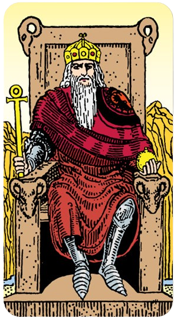

O Louco

O Arcano 0, também conhecido como "O Louco" no tarot, é uma carta extremamente poderosa e cheia de simbolismos. Quando esta carta aparece na tiragem do dia, ela traz consigo mensagens profundas e significativas para aquele momento específico. Vamos explorar o significado desta carta no contexto do tarot diário:
Significado do Arcano 0 - O Louco
O Louco é o arcano que representa novos começos, espontaneidade e a jornada do autoconhecimento. Ele é retratado como uma figura jovial, muitas vezes despreocupada, que se aventura sem medo do desconhecido.
Interpretação na Tiragem do Dia
Novos Começos:
A aparição do Louco indica que o dia está cheio de potencial para novos começos e aventuras. É um convite para abraçar novas oportunidades com mente aberta e coração leve.
Espontaneidade e Liberdade:
Sugere que você deve ser espontâneo e seguir sua intuição. Deixe de lado as preocupações e permita-se explorar caminhos inesperados. A liberdade é a chave.
Riscos Calculados:
O Louco nos lembra que, embora os riscos possam ser necessários, eles devem ser calculados. É um chamado para confiar no processo, mas também para ser consciente das escolhas que você faz.
Confiança no Futuro:
Esta carta encoraja a ter fé no desconhecido e a confiar que tudo se desenrolará conforme planejado. Mesmo que o caminho não seja claro, a jornada em si é valiosa.
Reflexão e Ação
Reflexão: O que você tem evitado por medo de falhar? O que te impede de seguir seus sonhos de forma mais livre e despreocupada?
Ação: Tome hoje como uma oportunidade para dar o primeiro passo em direção a algo novo, mesmo que seja pequeno. Experimente algo fora da sua zona de conforto.
Energia Positiva
O Louco é uma carta vibrante que infunde o dia com energia positiva e uma sensação de renovação. Ele te encoraja a viver o presente, a ser corajoso e a se aventurar sem medo. Se hoje você puxou o Arcano 0, é um sinal claro de que o universo está ao seu lado, prontos para apoiar suas novas jornadas e aventuras.
Que sua jornada com O Louco seja repleta de descobertas e crescimento!
O Mago

O Arcano 1 no tarot é conhecido como O Mago. Esta carta é rica em simbolismo e poder, trazendo uma mensagem de potencial e habilidade. Vamos explorar o significado desta carta quando aparece na tiragem do dia:
Significado do Arcano 1 - O Mago
O Mago representa a manifestação, a ação e o poder de transformar ideias em realidade. Ele é retratado como uma figura confiante, muitas vezes segurando uma vara mágica, com os quatro elementos (terra, ar, fogo e água) à sua disposição.
Interpretação na Tiragem do Dia
Poder de Manifestação:
O Mago indica que você possui todas as ferramentas e habilidades necessárias para realizar seus desejos e alcançar seus objetivos. É um sinal de que você tem o poder de manifestar suas ideias e intenções.
Iniciativa e Ação:
Sugere que hoje é o dia para agir e colocar seus planos em movimento. Não espere passivamente pelas oportunidades; crie-as. Use sua iniciativa e energia para dar o primeiro passo.
Confiança e Habilidade:
O Mago é um lembrete de que você é capaz e talentoso. Confie em suas habilidades e no seu conhecimento. Essa confiança é crucial para superar desafios e alcançar o sucesso.
Criatividade e Inovação:
Esta carta encoraja você a pensar de forma criativa e inovadora. Encontre novas soluções para problemas antigos e explore novas ideias. Seu potencial criativo é uma ferramenta poderosa.
Reflexão e Ação
Reflexão: Quais habilidades e recursos você já possui que podem ajudá-lo a alcançar seus objetivos? Como você pode usar essas habilidades de forma mais eficaz?
Ação: Hoje é o dia para começar algo novo ou avançar em seus projetos. Use suas habilidades e confiança para tomar ações concretas em direção aos seus objetivos.
Energia Positiva
O Mago é uma carta que infunde o dia com energia positiva e proatividade. Ele te encoraja a acreditar em si mesmo e nas suas capacidades. Se hoje você puxou o Arcano 1, é um sinal claro de que você está no controle do seu destino e que pode transformar suas ideias em realidade.
Que sua jornada com O Mago seja repleta de realizações e sucesso!
A Sacerdotisa / A Papisa

O Arcano 2 no tarot é conhecido como A Sacerdotisa. Esta carta é profunda e enigmática, cheia de simbolismo relacionado à intuição, mistério e sabedoria interior. Quando esta carta aparece na tiragem do dia, ela traz mensagens importantes para a reflexão e o autoconhecimento. Vamos explorar o significado desta carta:
Significado do Arcano 2 - A Sacerdotisa
A Sacerdotisa representa o conhecimento oculto, a intuição e o poder feminino. Ela é frequentemente retratada sentada entre dois pilares, segurando um pergaminho e vestida de azul, simbolizando sabedoria e serenidade.
Interpretação na Tiragem do Dia
Intuição e Sabedoria Interior:
A Sacerdotisa sugere que você deve confiar na sua intuição hoje. Sua sabedoria interior será sua melhor guia. É um dia para ouvir sua voz interior e seguir seus instintos.
Mistério e Reflexão:
Esta carta indica que há algo oculto ou desconhecido que precisa ser explorado. Pode ser um convite para refletir profundamente e buscar respostas dentro de si mesmo.
Paciência e Passividade:
A Sacerdotisa sugere que é um dia para ser paciente e observar, ao invés de agir impulsivamente. Às vezes, a ação mais poderosa é a inação e a observação cuidadosa.
Conexão Espiritual:
Hoje é um bom dia para se conectar com sua espiritualidade. Meditação, oração ou qualquer prática espiritual pode ser especialmente benéfica e esclarecedora.
Reflexão e Ação
Reflexão: Quais são as verdades internas que você precisa explorar? Como você pode ouvir melhor sua intuição?
Ação: Reserve um momento para meditar ou refletir em silêncio. Confie nas respostas que surgirem de dentro de você e siga sua intuição ao longo do dia.
Energia Positiva
A Sacerdotisa traz uma energia calma e contemplativa. Ela nos lembra da importância de confiar na nossa sabedoria interior e na intuição. Se hoje você puxou o Arcano 2, é um sinal claro de que você deve se voltar para dentro de si mesmo para encontrar as respostas e a orientação que procura.
Que sua jornada com A Sacerdotisa seja cheia de insights profundos e clareza!
A Imperatriz

O Arcano 3 no tarot é conhecido como A Imperatriz. Esta carta é cheia de simbolismo e representa a feminilidade, abundância, criatividade e natureza. Quando A Imperatriz aparece na tiragem do dia, ela traz mensagens poderosas e positivas para a reflexão e ação. Vamos explorar o significado desta carta:
Significado do Arcano 3 - A Imperatriz
A Imperatriz é uma figura de grande poder feminino e fertilidade. Ela é frequentemente retratada em um ambiente natural, cercada por abundância e crescimento, simbolizando sua conexão com a Terra e a natureza. Ela é a personificação da criação e nutrição.
Interpretação na Tiragem do Dia
Feminilidade e Nutrição:
A Imperatriz sugere que hoje é um dia para nutrir a si mesmo e aos outros. Esteja em contato com sua energia feminina, que é compassiva, acolhedora e carinhosa.
Abundância e Prosperidade:
Esta carta indica que você está rodeado de abundância e que é um bom momento para prosperidade. Aproveite as oportunidades que surgem e celebre a riqueza que você tem, seja material ou espiritual.
Criatividade e Expressão:
A Imperatriz encoraja você a expressar sua criatividade. Dedique tempo para suas paixões artísticas e permita-se criar livremente. Hoje é um dia para iniciar novos projetos criativos.
Conexão com a Natureza:
Passe algum tempo ao ar livre, conectando-se com a natureza. Este contato pode renovar sua energia e proporcionar uma sensação de equilíbrio e harmonia.
Reflexão e Ação
Reflexão: Como você pode nutrir e cuidar melhor de si mesmo e dos outros? Onde você pode encontrar mais abundância em sua vida?
Ação: Dedique um tempo hoje para cuidar de si mesmo ou fazer algo criativo. Talvez passe um tempo ao ar livre, apreciando a beleza da natureza ao seu redor.
Energia Positiva
A Imperatriz traz uma energia de nutrição, crescimento e abundância. Ela nos lembra da importância de cuidar de nós mesmos e dos outros, e de celebrar a fertilidade e criatividade em nossas vidas. Se hoje você puxou o Arcano 3, é um sinal claro de que você está em um momento de grande potencial criativo e prosperidade.
Que sua jornada com A Imperatriz seja cheia de amor, crescimento e criatividade!
O Imperador

O Arcano 4 no tarot é conhecido como O Imperador. Esta carta simboliza autoridade, estrutura, liderança e estabilidade. Quando O Imperador aparece na tiragem do dia, ele traz mensagens importantes sobre disciplina, controle e o uso adequado do poder. Vamos explorar o significado desta carta:
Significado do Arcano 4 - O Imperador
O Imperador é uma figura de autoridade e poder. Ele é frequentemente retratado sentado em um trono, segurando um cetro ou uma esfera, simbolizando seu domínio e controle. A figura do Imperador é associada à ordem e à autoridade patriarcal.
Interpretação na Tiragem do Dia
Liderança e Autoridade:
O Imperador sugere que hoje é um dia para assumir um papel de liderança. Seja confiante em suas decisões e exerça sua autoridade com sabedoria.
Estrutura e Disciplina:
Esta carta indica a importância da estrutura e da organização. É um bom momento para colocar suas coisas em ordem, criar planos sólidos e seguir uma rotina disciplinada.
Poder e Controle:
O Imperador representa o uso do poder de maneira justa e equilibrada. Hoje, você pode ser chamado a exercer controle sobre uma situação ou a tomar decisões importantes que exigem firmeza e clareza.
Estabilidade e Segurança:
Esta carta também traz uma sensação de estabilidade e segurança. Pode indicar que você está em uma posição estável ou que está trabalhando para criar uma base sólida para o futuro.
Reflexão e Ação
Reflexão: Onde você pode exercer mais liderança em sua vida? Como pode criar mais estrutura e disciplina em suas rotinas diárias?
Ação: Tome hoje como uma oportunidade para organizar seus planos e metas. Seja firme e confiante em suas decisões e ações, e trabalhe para criar estabilidade em sua vida.
Energia Positiva
O Imperador traz uma energia de força, estabilidade e controle. Ele nos lembra da importância de assumir a responsabilidade por nossas ações e de usar nosso poder de maneira justa e eficaz. Se hoje você puxou o Arcano 4, é um sinal claro de que você está em uma posição de força e que pode fazer grandes progressos com disciplina e liderança.
Que sua jornada com O Imperador seja cheia de força, clareza e sucesso!
O Papa / O Hierofante

O Arcano 5 no tarot é conhecido como O Hierofante. Esta carta é rica em simbolismo e está associada à sabedoria, tradições e orientação espiritual. Quando O Hierofante aparece na tiragem do dia, ele traz mensagens importantes sobre aprendizado, conformidade e a busca por conhecimento profundo. Vamos explorar o significado desta carta:
Significado do Arcano 5 - O Papa / O Hierofante
O Hierofante representa autoridade espiritual e sabedoria institucional. Ele é frequentemente retratado como uma figura religiosa ou um professor, sentado entre dois pilares, simbolizando seu papel como mediador entre o divino e o humano. Ele também é conhecido por suas conexões com tradições e rituais estabelecidos.
Interpretação na Tiragem do Dia
Orientação Espiritual e Sabedoria:
O Hierofante sugere que hoje é um dia para buscar orientação espiritual ou conselhos de alguém sábio. Isso pode ser um mentor, professor ou uma figura espiritual em sua vida.
Tradições e Rituais:
Esta carta indica a importância de respeitar as tradições e rituais que guiam sua vida. Pode ser um bom momento para se reconectar com práticas antigas ou seguir rituais que trazem conforto e significado.
Aprendizado e Educação:
O Hierofante também simboliza o aprendizado formal e a educação. Hoje pode ser um bom dia para buscar conhecimento, seja através de estudos, leitura ou participação em cursos ou workshops.
Conformidade e Estrutura:
Esta carta também traz a mensagem de conformidade e estrutura. Sugere que você siga as regras e normas estabelecidas, reconhecendo a sabedoria e a razão por trás delas.
Reflexão e Ação
Reflexão: Onde você pode buscar mais orientação e sabedoria em sua vida? Como as tradições e os rituais podem trazer mais significado e estrutura para o seu dia?
Ação: Dedique um tempo hoje para aprender algo novo ou participar de um ritual ou prática espiritual que lhe traga paz e clareza. Busque conselhos de alguém experiente se estiver enfrentando decisões difíceis.
Energia Positiva
O Hierofante traz uma energia de sabedoria, orientação e conexão com a tradição. Ele nos lembra da importância de buscar conhecimento profundo e de respeitar as tradições que moldam nossas vidas. Se hoje você puxou o Arcano 5, é um sinal claro de que você pode encontrar força e clareza através do aprendizado e da orientação espiritual.
Que sua jornada com O Hierofante seja cheia de sabedoria e crescimento espiritual!
Os Enamorados / Os Amantes

O Arcano 6 no tarot é conhecido como Os Amantes. Esta carta é cheia de simbolismo e está associada a escolhas, relacionamentos e harmonia. Quando Os Amantes aparecem na tiragem do dia, eles trazem mensagens importantes sobre amor, união e decisões significativas. Vamos explorar o significado desta carta:
Significado do Arcano 6 - Os Enamorados / Os Amantes
Os Amantes representam o amor, a parceria e as decisões que envolvem valores pessoais. Eles são frequentemente retratados como um casal em um cenário harmonioso, muitas vezes com um anjo ou uma figura celestial acima deles, simbolizando a benção e a proteção divina.
Interpretação na Tiragem do Dia
Amor e Relacionamentos:
Os Amantes sugerem que o amor e os relacionamentos são o foco do dia. Pode ser um momento para fortalecer laços afetivos, resolver conflitos ou celebrar a união com alguém especial.
Escolhas e Decisões:
Esta carta indica que você pode enfrentar decisões importantes hoje, especialmente aquelas que envolvem valores e questões morais. É um convite para escolher com o coração e considerar as consequências das suas escolhas.
Harmonia e União:
Os Amantes também representam a harmonia e a união. Hoje é um bom dia para buscar equilíbrio e entendimento nos relacionamentos, seja pessoal ou profissional.
Conexão Espiritual:
A presença dos Amantes pode sugerir uma conexão espiritual mais profunda com outra pessoa ou com você mesmo. É um convite para explorar o que realmente importa para você em termos de amor e relacionamentos.
Reflexão e Ação
Reflexão: Quais são as escolhas importantes que você precisa fazer hoje? Como você pode fortalecer e nutrir seus relacionamentos?
Ação: Dedique tempo para estar com alguém que você ama ou para refletir sobre seus valores e prioridades. Tome decisões importantes com base no que realmente importa para você.
Energia Positiva
Os Amantes trazem uma energia de amor, união e decisões significativas. Eles nos lembram da importância de seguir o coração e de valorizar os relacionamentos que nos cercam. Se hoje você puxou o Arcano 6, é um sinal claro de que o amor e as escolhas importantes estão no centro do seu dia.
Que sua jornada com Os Amantes seja cheia de amor, harmonia e decisões sábias!
O Carro

O Arcano 7 no tarot é conhecido como O Carro. Esta carta está associada ao triunfo, direção, força de vontade e avanço. Quando O Carro aparece na tiragem do dia, ele traz mensagens importantes sobre controle, determinação e progresso. Vamos explorar o significado desta carta:
Significado do Arcano 7 - O Carro
O Carro é uma figura poderosa, frequentemente retratada em uma carruagem puxada por esfinges ou cavalos, simbolizando a dualidade e a necessidade de equilibrar forças opostas para alcançar o sucesso. Ele é um símbolo de movimento e conquista.
Interpretação na Tiragem do Dia
Determinação e Força de Vontade:
O Carro indica que hoje é um dia para exercer sua determinação e força de vontade. Enfrente desafios de frente e use sua energia para superar obstáculos.
Controle e Direção:
Esta carta sugere que é importante tomar as rédeas da sua vida e direcionar seus esforços de maneira focada. Assuma o controle das situações e mantenha-se firme em seus objetivos.
Progresso e Movimento:
O Carro simboliza avanço e progresso. Hoje é um bom dia para fazer movimentos significativos em direção aos seus objetivos. É um sinal de que você está no caminho certo e que seu esforço será recompensado.
Triunfo e Sucesso:
Esta carta também é um presságio de triunfo e sucesso. Com perseverança e controle, você pode alcançar grandes conquistas e celebrar suas vitórias.
Reflexão e Ação
Reflexão: Quais são os objetivos que você deseja alcançar? Como você pode usar sua determinação e força de vontade para superar os desafios de hoje?
Ação: Tome medidas concretas para avançar em direção aos seus objetivos. Mantenha o foco e a determinação, e não se deixe abater por obstáculos.
Energia Positiva
O Carro traz uma energia de movimento, progresso e triunfo. Ele nos lembra da importância de tomar controle de nossa vida e dirigir nossos esforços com determinação e foco. Se hoje você puxou o Arcano 7, é um sinal claro de que você está em uma posição forte para alcançar o sucesso e avançar em direção aos seus objetivos.
Que sua jornada com O Carro seja cheia de conquistas e progresso!
A Força

O Arcano 8 no tarot é conhecido como A Força. Esta carta simboliza coragem, compaixão, domínio sobre os instintos e a força interior. Quando A Força aparece na tiragem do dia, ela traz mensagens importantes sobre controle emocional, perseverança e a capacidade de superar desafios. Vamos explorar o significado desta carta:
Significado do Arcano 8 - A Força
A Força é representada por uma mulher serenamente controlando um leão, o que simboliza o domínio sobre os instintos primitivos e a força bruta. Esta carta é um poderoso lembrete de que a verdadeira força vem de dentro, combinando coragem com compaixão.
Interpretação na Tiragem do Dia
Força Interior e Coragem:
A Força sugere que hoje é um dia para reconhecer e utilizar sua força interior. Enfrente os desafios com coragem e confiança, sabendo que você tem a capacidade de superar quaisquer obstáculos.
Domínio e Controle Emocional:
Esta carta indica a importância de manter o controle sobre suas emoções. Use a compaixão e a paciência para lidar com situações difíceis, em vez de reagir impulsivamente.
Perseverança e Determinação:
A Força simboliza a perseverança e a determinação. Continue firme no seu caminho, mesmo que enfrente dificuldades. Sua capacidade de persistir será recompensada.
Compaixão e Gentileza:
A Força também nos lembra da importância da compaixão e da gentileza, não apenas com os outros, mas também consigo mesmo. Seja gentil ao se deparar com suas próprias fraquezas e dificuldades.
Reflexão e Ação
Reflexão: Onde você precisa exercer mais controle emocional e coragem em sua vida? Como a compaixão e a gentileza podem fortalecer sua capacidade de enfrentar desafios?
Ação: Enfrente os desafios do dia com uma atitude de coragem e compaixão. Seja perseverante e use sua força interior para superar obstáculos.
Energia Positiva
A Força traz uma energia de coragem, domínio e compaixão. Ela nos lembra da importância de enfrentar os desafios com confiança e de usar nossa força interior para manter o equilíbrio e o controle. Se hoje você puxou o Arcano 8, é um sinal claro de que você tem a capacidade de lidar com qualquer situação que surgir.
Que sua jornada com A Força seja cheia de coragem, perseverança e compaixão!
O Eremita

O Arcano 9 no tarot é conhecido como O Eremita. Esta carta simboliza introspecção, sabedoria interior, busca por conhecimento e reflexão. Quando O Eremita aparece na tiragem do dia, ele traz mensagens importantes sobre a necessidade de se voltar para dentro, buscar respostas internas e valorizar momentos de solitude. Vamos explorar o significado desta carta:
Significado do Arcano 9 - O Eremita
O Eremita é uma figura solitária, frequentemente retratada segurando uma lanterna, que simboliza a iluminação interior e a busca pela verdade. Ele representa a sabedoria adquirida através da reflexão e do tempo passado em solitude.
Interpretação na Tiragem do Dia
Introspecção e Reflexão:
O Eremita sugere que hoje é um dia para introspecção. Reserve um tempo para refletir sobre suas escolhas, objetivos e o caminho que está trilhando. A sabedoria interior será sua guia.
Busca por Conhecimento:
Esta carta indica que você pode estar em uma jornada de busca por conhecimento ou verdade. Seja através de estudos, meditação ou contemplação, o dia é favorável para explorar novas áreas de aprendizado.
Sabedoria Interior:
O Eremita nos lembra que a verdadeira sabedoria vem de dentro. Confie na sua intuição e nas lições que a vida lhe ensinou. Use esse conhecimento para guiar suas decisões e ações.
Solitude e Paz Interior:
A presença do Eremita sugere a importância de momentos de solitude para encontrar paz interior. Desconecte-se das distrações externas e conecte-se consigo mesmo.
Reflexão e Ação
Reflexão: Quais são as questões em sua vida que precisam de introspecção e reflexão? Como você pode buscar mais conhecimento e sabedoria interior?
Ação: Dedique tempo para meditar, refletir ou estudar algo que desperte seu interesse. Encontre um espaço tranquilo onde possa se conectar com seus pensamentos e sentimentos mais profundos
Energia Positiva
O Eremita traz uma energia de sabedoria, introspecção e iluminação interior. Ele nos lembra da importância de buscar respostas dentro de nós mesmos e valorizar momentos de solitude. Se hoje você puxou o Arcano 9, é um sinal claro de que você está em um momento propício para a reflexão e o crescimento pessoal.
Que sua jornada com O Eremita seja cheia de sabedoria e clareza!